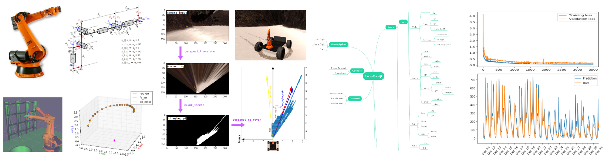

Electrical and Software Engineer
Engineering consultant and mentor at Udacity, involved in an industry-curated robotics training program since 2017, focusing on core areas of robotic perception, machine learning, control systems, and embedded hardware. Also completing graduate coursework in CS and Software Engineering, through distance education, from Harvard University DCE having completed a B.Eng. degree in Electrical Engineering in 2015 from McGill University in Canada. Previously, designed embedded systems at ImagineAny and worked on IoT platforms at the McGill Advanced Networking Research Lab, publishing six chapters in Springer Nature. While at McGill, completed 3 full-time and 2 part-time Co-op terms at Ericsson as an SDT Staff Software Engineering intern. Prior to that, involved at McGill Robotics for a year as an Electrical Engineer for the Fourth Annual NASA Lunabotics Competition. In 2012, co-founded the McGill Flying Club, the largest student-run aviation organization in Canada, serving as President and Strategist.
Areas of interest: robotics, embedded systems, deep learning, software engineering, data analysis, safety-critical systems, aerospace engineering.
